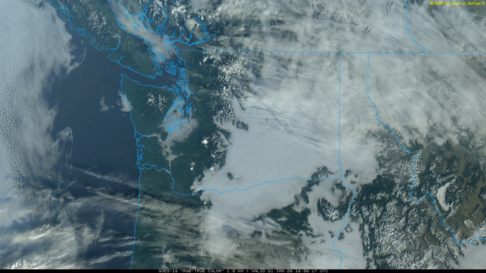
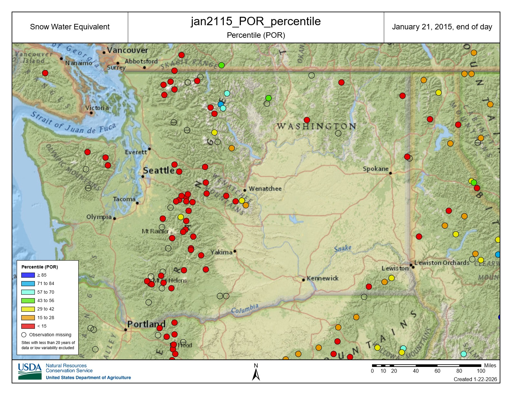
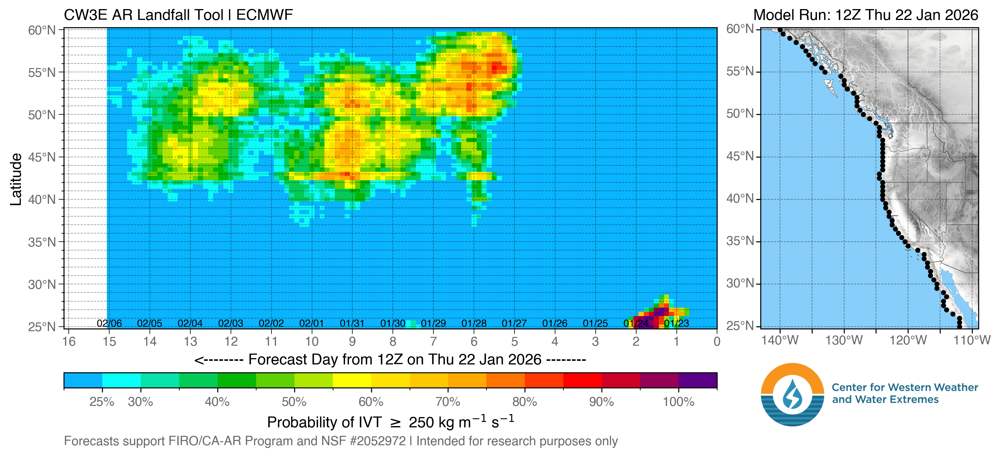
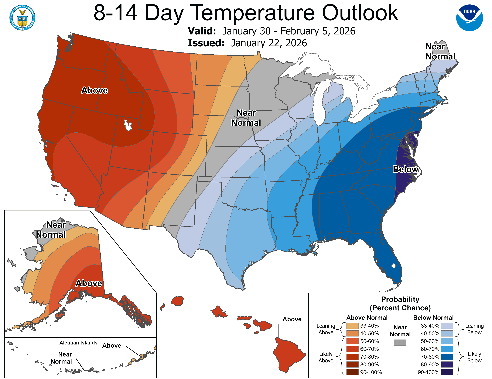

June-uary Continues: The Good👼, The Bad😈, and The Ugly👹
Welcome to The Dendritic Growth Zone!
Past Week's Recap
This week was a tale of two seasons for lower and higher elevations.
Lower elevations (below 4000'-5000') were trapped in the ice box as the nearly
stationary high pressure system overhead kept things stable. This is a classic set up to build robust inversions. They form because the sun angle is so low,
the sun cannot combat the efficient radiational cooling (energy loss) from the surface. Since cold air is denser than warm air, it builds up from below
like filling a bath. With no wind to scour out these inversions, the radiation fog that did form in lower lying areas never went away.
Rime ice was a common sight on trees. At least this gave the gloomy conditions a wintery feel... This setup also supported strong east flow over the passes throughout the week, as relatively higher pressure build up on the east
side to drive air towards the relative lower pressure on the west side. All that said, the good news is that this setup at least protects the very very meager lowe
elevation snowpack from melting.
Higher elevation (above roughly 5000') had relatively consistent clear skies and very warm temperatures. Freezing levels were consistetly at or
above 10,000'. These inversions were sometimes on the order of 20-30°F from valley bottom to alpine! The bad news is that this definitely did not protect our
mid-elevation snowpack.
Towards Thursday, the ridge began to weaken and retrograde a bit to allow slightly cooler air under northwest flow to infiltrate the region alongside
some high clouds.

Observation Highlight from the Past Week - Red
I'm not gonna sugar coat this. Things are grim. We have 11 SNOTEL sites in Washington at their lowest SWE (snow water equivalent) for this date in the period of record. We also have 44 sites in the bottom 15% historically. This is seemingly a repeat of 2015, our most recent "year without a winter".

🧙♂️ Forecast Discussion
Short-term (Friday-Sunday)
Now for the ugly. Again (sigh), this weekend looks to be a cousin of the past week. However, there are some slight differences. The ridge that was more or less directly overhead
during the week will retrograde westward Friday. This change will allow a very weak impulse to slide down the lee side of the ridge.
Above any inversions that don't get scoured out over the weekend, freezing levels will be in the 2,500-6,000' range with higher freezing levels to the south.
While no precipitation is expected, a pulse of higher winds could impact the area at upper elevations Saturday afternoon as the system passes through with
increasing cloud cover.
Towards the end of the weekend, the upper level ridge axis will move right along the West Coast to get this weeks-long drought going.
Medium-Term (Monday-Wednesday)
Monday should be a continuation of Sunday, with somewhat warm-ish and sunny-ish conditions. Nothing new. But ho there! Is that precipitation on the horizon? While it is not an ideal situation as the moisture looks to have tropical origins (and thus warm), freezing levels could remain somewhat suppressed, giving some mid-level locations some much needed snowfall. Honestly, we will take any chance at snow at this point.

🧙🔮🧙♂️ Reading the crystal ball - 7+ day outlook
The Climate Prediction Center made a total flip-flop from last week. Above normal temperatures are favored with relatively high confidence over the 8-14 day period. Precipitation is projected to be near normal, so maybe we could get something going with favorable disturbance or two? But my confidence is low and we can hope the randomness of the atmosphere can finally roll in our favor.

❄️ Snowfall
Weekend Snow Accumulation Forecast
| Site | Through 4am Saturday | Through 4am Sunday | Weekend Snow Accumulation (4pm Thursday through 4am Monday 19 Jan) |
|---|---|---|---|
| Mt. Baker (4500') | 0" | 0" | 0" |
| Washington Pass | 0" | 0" | 0" |
| Stevens Pass (4500') | 0" | 0" | 0" |
| Hurricane Ridge | 0" | 0" | 0" |
| Blewett Pass | 0" | 0" | 0" |
| Snoqualmie Pass | 0" | 0" | 0" |
| Crystal (5000') | 0" | 0" | 0" |
| Paradise | 0" | 0" | 0" |
| White Pass (5000') | 0" | 0" | 0" |
Easiest forecast of the season, cash it 💸
🧊 Freezing Level (above stubborn inversions)
- Friday: 2000-4000 feet (North of I-90)
3000-5000 feet (South of I-90)
- Saturday: 3000-6000 feet (North of I-90)
4000-7000 feet (South of I-90)
- Sunday: 3000-5000 feet (North of I-90)
4000-7000 feet (South of I-90)
🎿 Our Recommendations
Best Choice This Weekend: South aspects in the afternoon on volcanoes on Saturday🌽
With our consistent freeze-thaw cycles, look for some decent corn potential on solar aspects roughly below 7000'. I bumped these elevations down a bit since temperatures have cooled since last weekend. Thus, a later corn transition may (or might never) occur at higher elevations. Saturday will likely be the warmest, with the greatest corn potential. When corn harvesting elsewhere, consider the inversions when you get to the trailhead, open creeks, and patchy and icy snow. Conditions will change dramatically as you ascend, so be prepared and bring your ski crampons... or even normal crampons.
Runner-Up: Nordic skiing
This is an exact copy from last week. Except its uglier now...
"If you're not able to get some corn in the alpine, it will not be worth it.
I promise. Open creeks, frozen coral reef at the passes, tree bombs, you name it. I have been
saying lately that there are no bad conditions, only bad attitudes. But this weekend, there
absolutely will be bad conditions."
- Clinton Alden, Cascade Mountain Weather Forecaster
On to my other fave winter activity: skate skiing. Since Pass level snow has been protected from melting, some of the lower elevation Nordic
areas have been somewhat protected. Although conditions are still low-tide,
go rip that corduroy, if you can get out early before others ruin it!